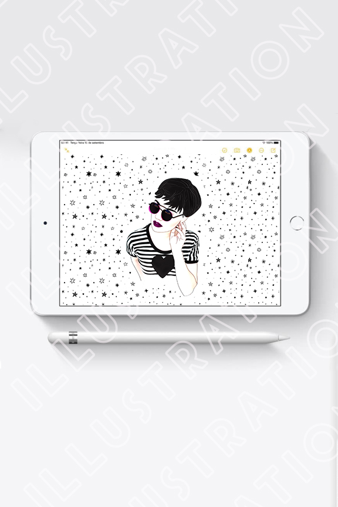
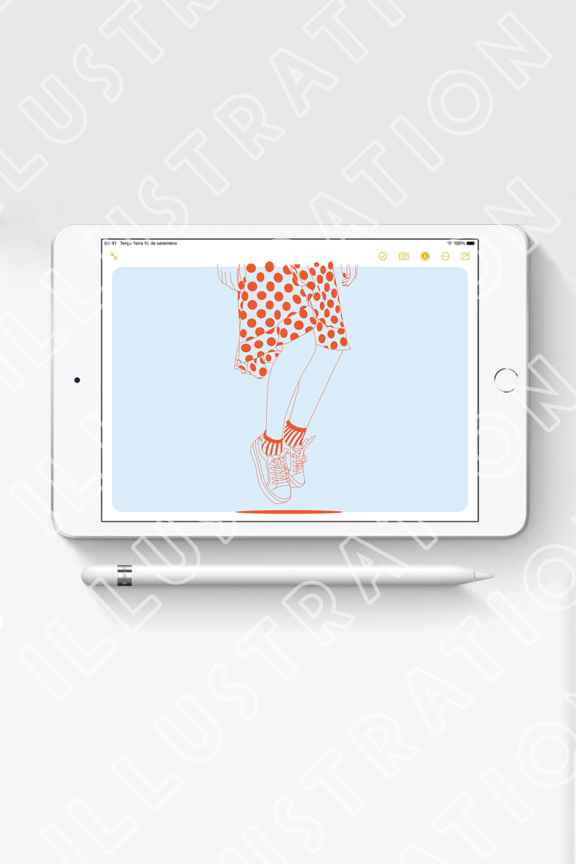
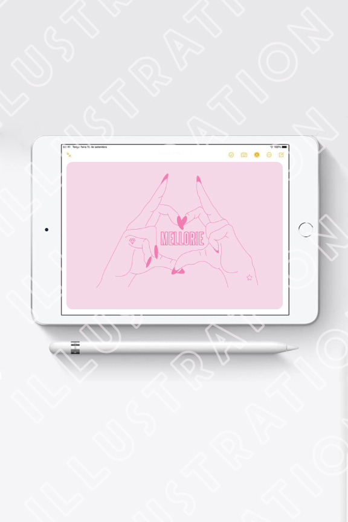
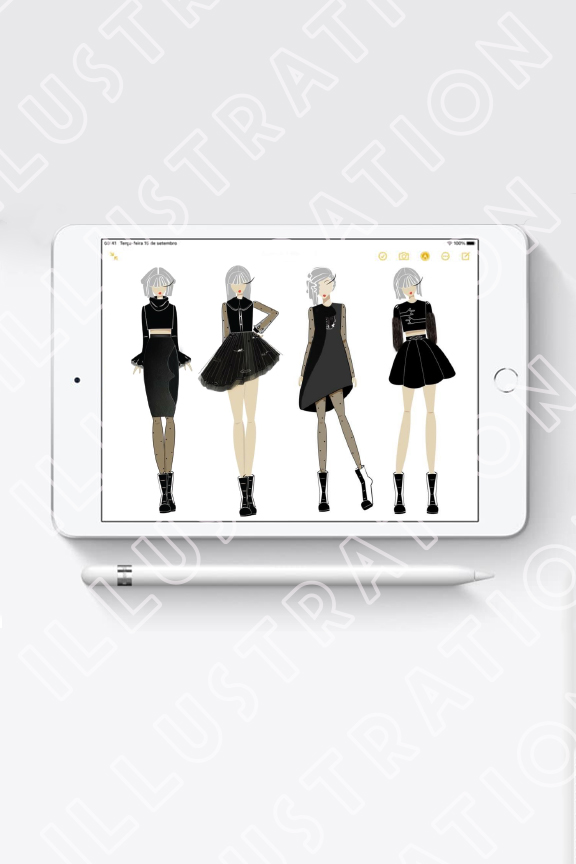
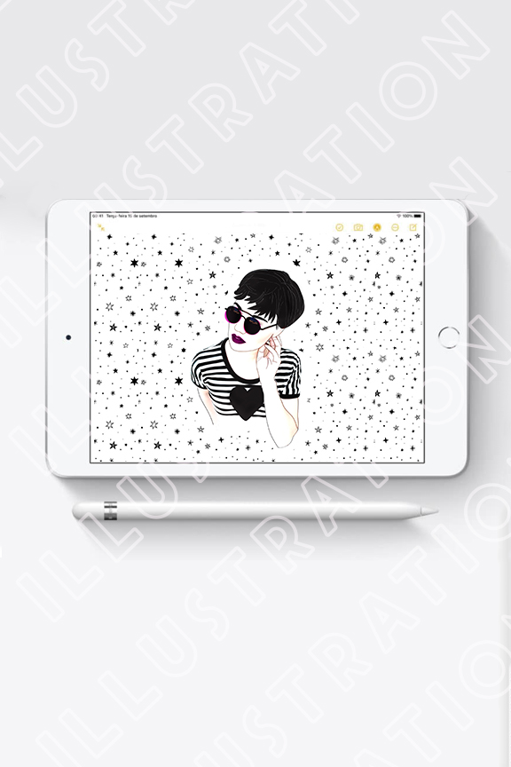
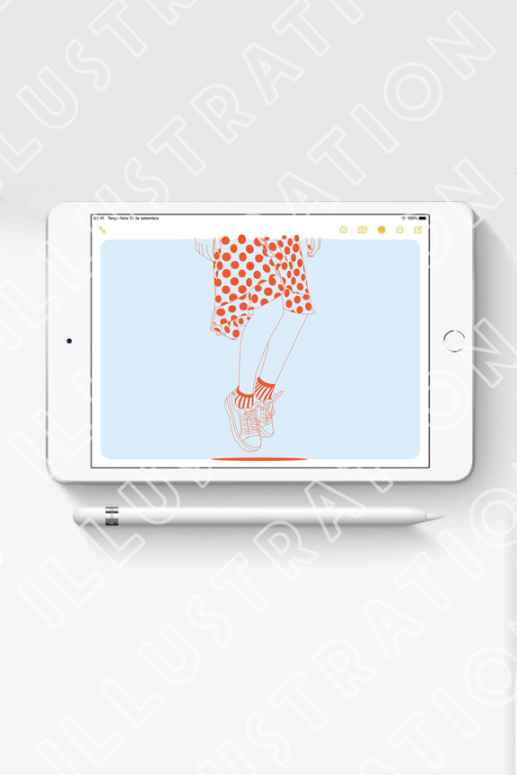
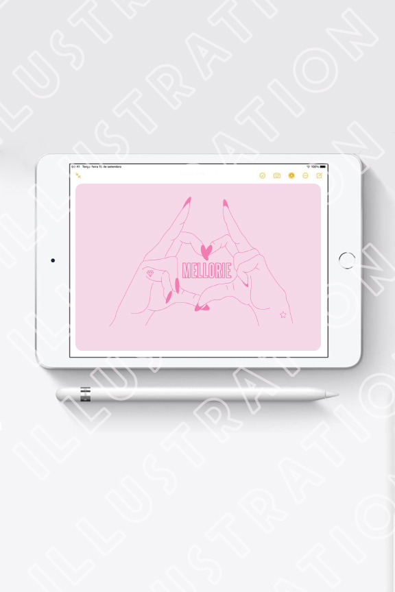
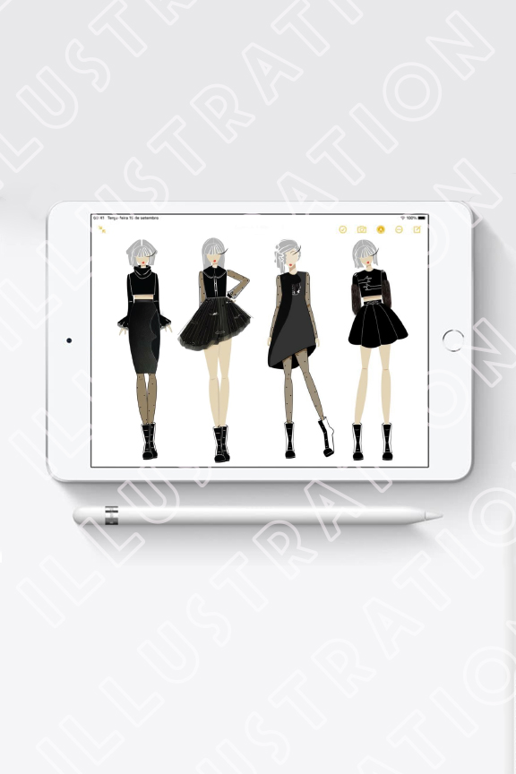

Design, Photography, Styling & Illustration
This portfolio showcases a collection of my work,
with a strong emphasis on design, photography, fashion styling,
and illustration. Over the years, my experience as a designer
has honed my keen eye for detail and aesthetics.
I utilize industry-standard tools like Adobe Illustrator and Photoshop
to bring my projects to life.


 






